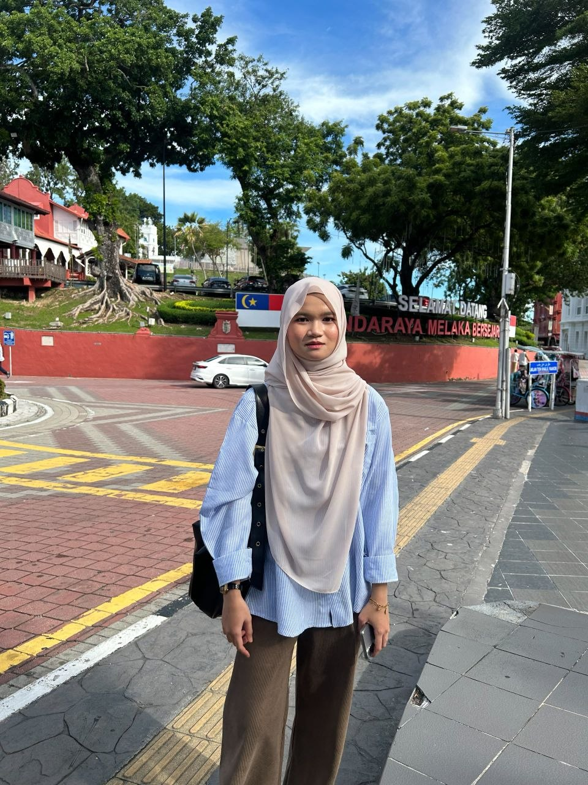

Diploma in Information Management
Welcome to my personal website. This website contains my biodata, education background, work experience, family information and photo gallery.
© 2026 Nurul Syuhada. All Rights Reserved.